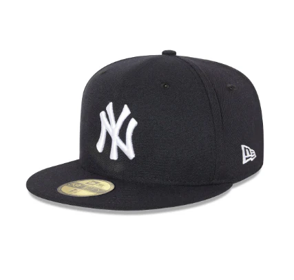

PORTAFOLIOS
Bienvenido a mi portafolio. Soy estudiante del ciclo formativo de Grado Medio en Sistemas Microinformáticos y Redes (SMIX), apasionado por la programación, la tecnología y el desarrollo.
Este sitio reúne algunos de mis proyectos desarrollados con tecnologías como A-Frame y MindAR, centrados en experiencias inmersivas, realidad aumentada y entornos virtuales.
Ver repositorio en GitHubLa terra i la lluna
Un petit exercici amb A-frame per testejar l'apliació en diversos dispositius: en pantalla d'ordinador, en format mòbil i a unes ulleres de Realitat Virtual
Personajee en 3D
Personatge ballant en 3D, fet amb GitHub, i la pàgina és un HTML. Està guapíssim, et va duríssim, de vegades sembla dawn, però això és un problema de la conversió d’arxius.
Wally
Encuentra a wally
Mascara i barret
Mascara que detecta tu cara
.png)
El cubisme
Entorno 3D con animaciones basicas

Miedo
Entorno 3D con animaciones un poco mas complicadas
proximo
proximo
Joel Labrador
Estudiant de SMIX del cicle formatiu de Grau Mitjà en Sistemes Microinformàtics i Xarxes.
M'apassiona la tecnologia i la informàtica, especialment tot el que té a veure amb la programacio i el muntage de ordinadors.
Durant la meva formació, he adquirit coneixements en hardware, xarxes, sistemes operatius i administració de servidors. M'agrada treballar en equip i solucionar problemes tècnics de manera eficient. Estic motivat per continuar aprenent i aplicar els meus coneixements en un entorn professional.
Currículum Vitae
Puedes descargar mi CV para conocer más sobre mi formación y habilidades.